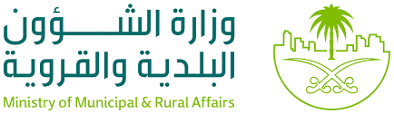

Architectural Design Guidelines for Najran and the Northern Border Region
Regional plan · Najran and the Northern Border Region, Saudi Arabia
Architectural design guidelines in Najran and the Northern Border Region for the Ministry of Municipal, Rural Affairs and Housing (MOMRAH), with WATG.
Najran: As of the 2022 census, the city population was 381,431, with the population of the governorate of Najran being 592,300. Source
Partners

Client

More from Najran
2022AlUla Strategic Framework PlanAlUla · 2022 Al Mashaaer Al Mugaddassah Master PlanMakkah (Mina, Muzdalifah, Arafat) · 2024-2025
Al Mashaaer Al Mugaddassah Master PlanMakkah (Mina, Muzdalifah, Arafat) · 2024-2025 AlUla County Infrastructure Master PlanAlUla · 2019-2020
AlUla County Infrastructure Master PlanAlUla · 2019-2020 Jabal Thabeer Park (Mina, Makkah)Mina, Makkah · 20252024Kidana Al Khaif (Mina, Muzdalifah and Arafat)Makkah (Mina, Muzdalifah, Arafat) · 2024-2026
Jabal Thabeer Park (Mina, Makkah)Mina, Makkah · 20252024Kidana Al Khaif (Mina, Muzdalifah and Arafat)Makkah (Mina, Muzdalifah, Arafat) · 2024-2026 Jorhum DestinationMakkah · 2026
Jorhum DestinationMakkah · 2026
Al Mashaaer Al Mugaddassah Master PlanMakkah (Mina, Muzdalifah, Arafat) · 2024-2025AlUla County Infrastructure Master PlanAlUla · 2019-2020Jabal Thabeer Park (Mina, Makkah)Mina, Makkah · 20252024Kidana Al Khaif (Mina, Muzdalifah and Arafat)Makkah (Mina, Muzdalifah, Arafat) · 2024-2026Jorhum DestinationMakkah · 2026